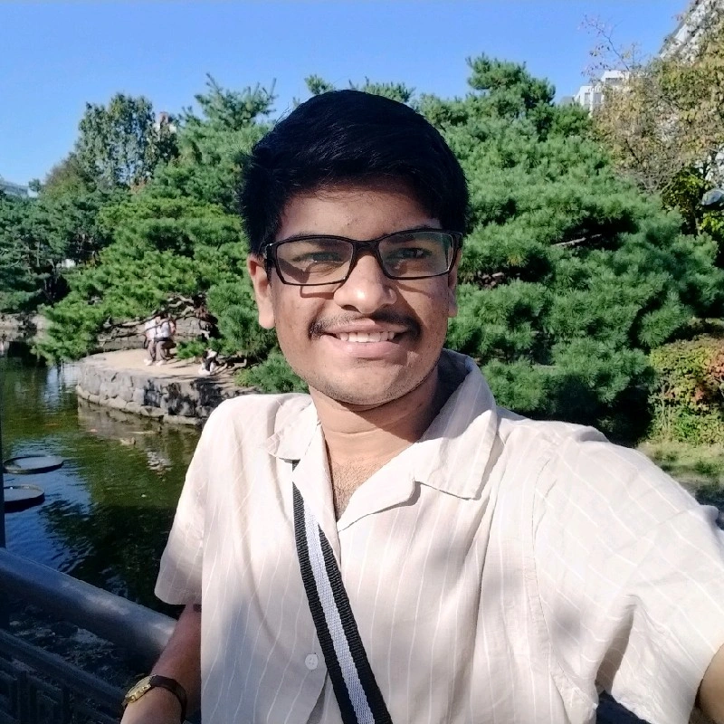

About me

I am a predoctoral fellow at IISc under the SPARKS Programme, advised by Prof. Sumit K. Mandal.
At IISc, my work involves use of tools from theoretical computer science to analyze and inform better quantum hardware design, particularly around qubit connectivity and circuit compilation. Our work on coupling map design received the ACM SRC Bronze Medal at MICRO 2025 (Undergraduate category).
I am concurrently pursuing a B.Tech. in Electronics and Communication Engineering (Quantum Technology track) at PES University (Class of 2026).
Research interests
I am broadly interested in quantum algorithms and complexity — what quantum computers can and cannot do efficiently. This includes quantum speedups for combinatorial and algebraic problems, quantum learning and property testing of Boolean functions and quantum states, and the interplay between coding theory and complexity (list-decoding, local testability, pseudorandomness) in the quantum setting.
Research ∈ {Quantum Algorithms, Quantum Learning Theory, Quantum Complexity Theory, Analysis of Boolean Functions, Property Testing}
If you think our interests overlap, I’d love to hear from you — feel free to reach out by email.
[CV] [arXiv profile] [LinkedIn]
Papers
All my publications are available on the arXiv.
-
QuSim-Join: Provably Optimal Quadratic Speedup in Set Similarity Joins via Quantum Amplitude Estimation.
Prateek P. Kulkarni and Aakarsh Alam. (Equal contribution.)
3rd Workshop on Quantum Computing and Quantum-Inspired Technology for Data-Intensive Systems and Applications (Q-Data 2026).
Co-located with SIGMOD'26.
-
One Key Good, L Keys Better: List Decoding Meets Quantum Privacy Amplification
Prateek P. Kulkarni
16th Conference on Quantum Cryptography (QCrypt 2026).
[arXiv:2603.18097]
-
Quantum Algorithms for Approximate Graph Isomorphism Testing
Prateek P. Kulkarni
[arXiv:2603.02656v2]
-
Entanglement-Dependent Error Bounds for Hamiltonian Simulation
Prateek P. Kulkarni
Poster at 21st Conference on the Theory of Quantum Computation, Communication and Cryptography (TQC 2026).
[arXiv:2602.00555] [ECCC: TR26-042]
Talks
Quantum Communication Exponentially Speeds-up Circuit Synthesis
Short contributed talk · 2nd Workshop on Automata and Games for Synthesis (WAGS@FSTTCS 2025)
[Workshop page]
Multi-Core Quantum Computing with Superconducting Qubits
Poster presentation · Systems Day 2025, CSA, IISc
[Poster listing]
Service
- Reviewer — IEEE Transactions on Quantum Engineering
- Teaching Assistant — Quantum Transport and Logic Gates, PES University (Spring 2025)
Education
B.Tech., Electronics and Communication Engineering (Quantum Technology track)
PES University, 2022–2026
Contact information
Email address: pkulkarni2425 (at) gmail (dot) com
Office: CSA A358, Department of Computer Science and Automation, IISc, Bengaluru 560012